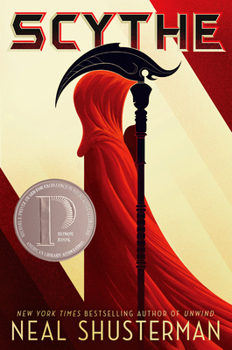

Scythe: Humanity Beat Death, and It Got Weird

A YA dystopian pick, and a genuinely fucked-up premise: humanity beat death, so "scythes" are the only ones left with the job of permanently killing people to keep the population in check.
A hell of a hook
Following two teen apprentices getting forced into learning that trade is a hell of a hook, and the world Shusterman builds around it — perfect on the surface, ice-cold underneath — sticks with you.
[Where it lands] Not as immersive as a good LitRPG binge, and the YA edges show. But as a change of pace between longer commitments it did exactly what I wanted.
7/10. Worth it for the premise alone.